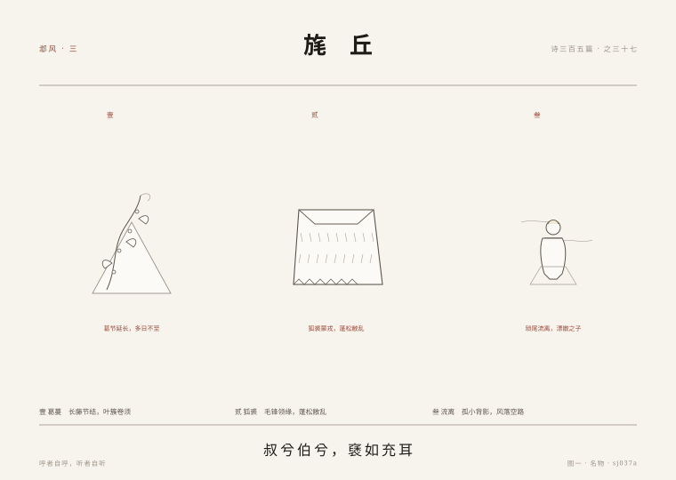
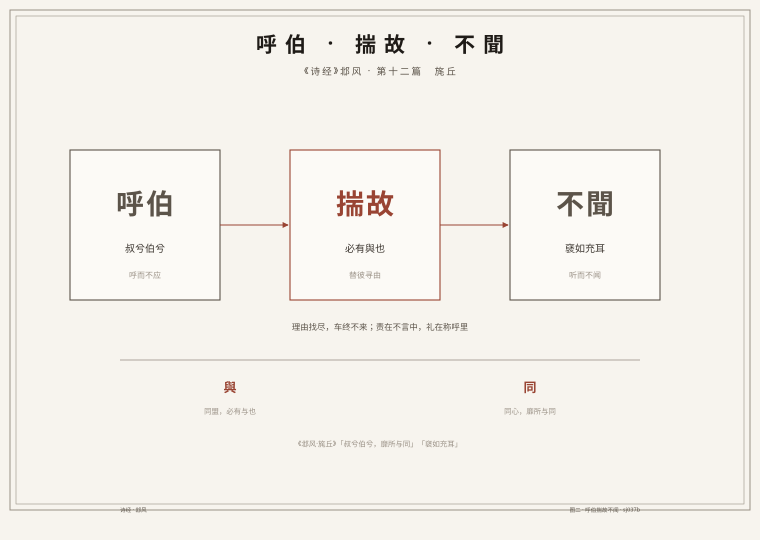

第三十七篇 旄丘
邶风 · 之三 SJ037
一 解题
诗三判：
- 谁在说：黎侯寄寓于卫的臣子。他对着卫国诸臣呼「叔」呼「伯」，一问再问：为何多日不来？为何安处不动？车为何不东？末了叹对方充耳不闻。
- 说什么事：旄丘上葛藤蔓延，节蔓拖得很长；叔啊伯啊，为何多日不至？为何安处？必有同盟相助；为何久留？必有缘故。狐裘蓬松凌乱，车也不向东来；叔啊伯啊，没有与我同心的人。细小啊微弱啊，漂散之子；叔啊伯啊，耳饰充耳，听而不闻。
- 为何编在此：《式微》写随君役于露泥，此篇写望大国相救而不应。同是黎卫之事，彼自问自解，此呼而不应；邶风一卷里，人情之薄至此而极。
《毛序》：「《旄丘》，责卫伯也。狄人迫逐黎侯，黎侯寓于卫，卫不能修方伯连率之职，黎之臣子以责于卫也。」——责卫为方伯而不救黎。
朱子《诗集传》：「旧说：黎侯寓于卫，其臣以诗曰。」——朱子存旧说，不深定。
本库的看法：这首诗的骨在「叔兮伯兮」呼而不应。
四章三呼叔伯，呼声一回比一回远：先问多日，再揣其故，三章叹无与同，四章直说到充耳不闻。「必有与也」「必有以也」是替对方找理由，理由找尽，车终不来。诗不骂卫，只把呼与不应并陈；责在不言中，礼在称呼里。
二 经文
第一章
旄丘之葛兮，何誕之節兮？叔兮伯兮，何多日也？
第二章
何其處也？必有與也。何其久也？必有以也。
第三章
狐裘蒙戎，匪車不東。叔兮伯兮，靡所與同。
第四章
瑣兮尾兮，流離之子。叔兮伯兮，褎如充耳。
分章：毛传、朱子皆四章，章四句。一章葛长日久；二章揣度其故；三章裘乱车迟；四章流离不闻。三「叔兮伯兮」分押一、三、四章，呼中夹叹。
三 韵读
| 一 |
葛、節（月部）；也（歌部） |
月部／歌部 |
| 二 |
處、與（魚部）；久、以（之部） |
魚部／之部 |
| 三 |
戎、東、同 |
東部 |
| 四 |
尾、離（微部）；耳（之部） |
微部／之部 |
一章月部入声短促，歌部舒缓作叹；二章魚部宽而问，之部长而揣；三章東部沉厚，落于「同」字孤绝；四章微部低回漂散，之部收在「耳」，听不见。全篇落脚声是「褎如充耳」——呼声入不了耳。
四 字义与名物
- 旄丘——前高后低之丘。
- 葛——藤本蔓生，茎长有节。
- 誕——延、长。节，葛之节蔓。不是「诞生」。
- 叔、伯——长幼之称，呼卫之诸臣。
- 處——居、安处不动。
- 與——同盟相与之国。不是「给予」。
- 以——缘故、缘由。
- 蒙戎——蓬松乱貌，写裘之敝乱。不是「戎装」。
- 匪車不東——非车不东行；车不来向东。
- 靡所與同——无与同心同恤之人。
- 瑣——小。
- 尾——末、细弱。
- 流離——漂散、流转。
- 褎如——盛饰貌；一说褎为裒聚。
- 充耳——冠侧悬垂的耳饰；诗中取听而不闻之喻。
五 今译
第一章
旄丘上的葛藤啊，节蔓为何这么长？叔啊伯啊，为何多日不来？
第二章
为何安处不动？必有相与同盟。为何久久不来？必有缘故。
第三章
狐裘蓬松凌乱，车也不向东来。叔啊伯啊，没有与我同心的人。
第四章
细小啊微弱啊，漂散的人。叔啊伯啊，耳饰充耳，听而不闻。
译注：「诞」译延长；「与」译同盟相与；「蒙戎」译蓬松乱貌；「流离」译漂散流转；「充耳」既是耳饰，又取不闻之喻。
六 章旨
一章：葛长日久。葛节拖长，时日拖长；呼伯而不应。
二章：揣度其故。或有同盟，或有缘由；替对方把理由找尽。
三章：裘乱车迟。裘敝车不东，无与同心。
四章：流离不闻。琐尾弱小，漂散之子；呼声充耳，终不入听。
一章问日，二章揣故，三章叹孤，四章说不闻。呼者自呼，听者自听；三呼之后，知其不应。
此即本卷「望救而不应」之诗，与《式微》之役、《谷风》之弃，同为礼失之世的人情记录。
七 诗教
- 赋：直陈责望与揣度之辞；葛、狐裘即物托情。
- 观：可观一「应」。呼叔伯而不应，观上下相接、同盟相恤之薄。
- 群：所求在同盟同恤；离群漂散，群道已孤。
- 怨：怨在不应、不闻；怨而不失礼，称呼犹以叔伯，不斥其名。
八 分寸与边界
- 不可把「诞」解作「诞生」。诞为延、长，言葛节延长日久。
- 不可把「与」解作「给予」。与为同盟相与之国，与「同」字相应。
- 不可把「蒙戎」解作「戎装」。蒙戎是蓬松乱貌，写裘之敝乱不整。
- 不可把「流离」当成语「流离失所」直用。流离为漂散流转，琐尾言其弱小末路。
- 不可把「充耳」只解成实写耳饰而忽略不闻之喻。充耳是冠侧饰，诗中取听而不闻。
九 存疑
- 本事所指：毛序责卫伯不救黎侯；朱子存旧说；一说友人相怨。本库取黎臣责卫。
- 「必有与也」「必有以也」：与为同盟一说，与为助一说；以为由一说。本库从同盟、缘由。
- 「匪车不东」：非车不东行一说，匪为彼一说。本库从车不来东。
- 「褎如」：盛饰一说，褎为裒聚一说。本库从盛貌。
- 「流离之子」：流离为鸟名（枭）一说，漂散一说。本库从漂散。
十 跨典
- 《邶风·式微》——同卷黎侯寓卫之事，两诗相表里；彼自问不归，此呼而不应。
- 《鄘风·载驰》「控于大邦，谁因谁极」——望大国相救之辞，与此篇望卫同旨。
- 《左传·襄公二十七年》「同恤灾危，救患分灾」——同盟相恤之义，正是此篇所求。
- 《小雅·巧言》「君子如声，君子如响」——声响应和之对照；彼如响，此不应。
- 《楚辞·九章》「信谗谀之溷浊兮，盛气志而过之」——充耳不闻之叹，后世失意之调相近。
十一 双卡与图
双卡五对：
| 誕（延长） |
诞生（误训） |
| 與（同盟） |
给予（误训） |
| 蒙戎（蓬松乱） |
戎装（误读） |
| 流离（漂散） |
流离成语（直用） |
| 呼而不应 |
充耳不闻 |

图一 · 葛蔓·狐裘·流离之子 名物图

图二 · 呼伯—揣故—不闻 义理图
读图三处：
- 葛画藤蔓与节蔓：葛识别在长藤、节结与叶簇；名物图取藤节、卷须、叶三处特写。
- 狐裘画毛理与敝乱：裘识别在毛锋、领缘与蓬松轮廓；不画整只狐。
- 义理三章以「不闻」收尾：呼伯—揣故—不闻，箭头由问及绝；末尺标出「与」「同」，同盟同恤而终不得同。